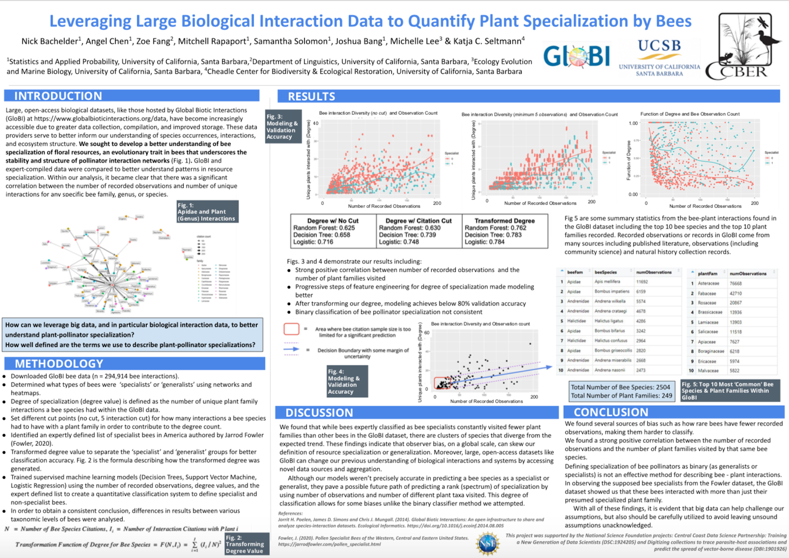
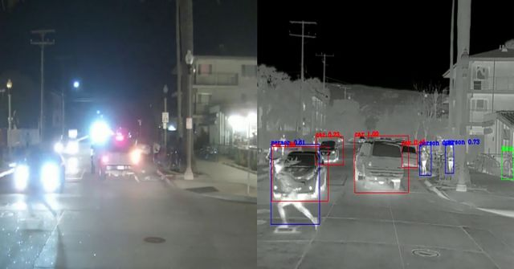
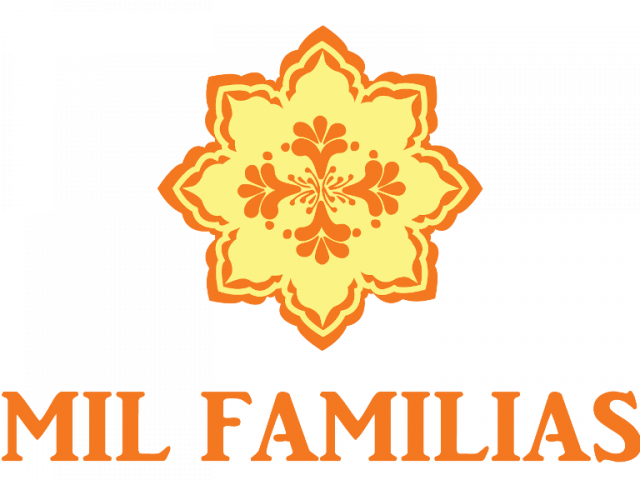

2020-2021 Projects
Listed alphabetically by project sponsor.
Appfolio
AI: teaching a machine to learn math
Student team: Priyanka Banerjee, Shaka Kanenobu, Vikram Pasupathy, and Ari Polakof
Advisors: Soeren Thust, Peng-Yuan Lai, Sikun Lin, and Ambuj Singh
This project aims to teach a machine to learn math. Students will attempt to train a robot to recognize important data contained within invoices and to perform the necessary calculations on those invoices. This task is important. Figuring out credits and debits is the bottleneck of the payment process. Learning the spatial relationship of data with an arithmetic relationship is a crucial piece of intelligence. With an all-in-one system, AppFolio would like to recover any financial snapshot of any customer in their history.
California Cooperative Oceanic Fisheries Investigations (CalCOFI)
Larval fish assemblage as an indicator to predict the fisheries catch
Student team: Leron Reznikov, Andie Rupprecht, Gavin Tieng, and Meng Vong
Advisors: Erin Satterthwaite, Julia Coates, Chau Tran, and Sang-Yun Oh
CALCOFI studies the marine environment of coastal California and investigates the relationships between climate, fish population, and other human activities. This project seeks to establish whether any correlation can be drawn from two separate datasets, as well as possibly investigate any environmental factors that add variance to the relationship. The two data sets under investigation are:
- Fish larvae catch data from CALCOFI cruises intended to measure populations of various species
- Commercial fish data from fisheries in California
How does fish catch change in relation to changing environmental conditions & larval community composition? Do we find that El Nino year conditions have lower recreational and/or commercial catch (lbs) or catch value ($)?

Consider this initial project visualization of Yellowtail larvae identified in 2016 (purple) compared to all locations Yellowtail were caught in the years 2017-2019 (yellow). The time lag was picked to give enough time for recruitment to happen, so the larvae identified in 2016 could possibly be the same fish caught in the later years. All the larvae and almost all of the catches occurred within the Southern California bight which might suggest some spatial relations.
The team will explore the data in more depth, also looking at other species and timeframes.
Climate change and young fish: the relationship between pH and aspects of larval fish assemblage in the California current
Student team: Cristian Razo, Robin Hollingsworth, and Jay Patwardhan
Advisors: Erin Satterthwaite, Chau Tran, and Sang-Yun Oh
This project looks for correlations between the water characteristics of multiple coastal regions and the makeup of the marine life there, with hopes of providing insight to future observations on what the makeup of marine life should be. This can be vital to preserving the environment, helping endangered marine species, and ensuring the well health of our oceans in general as well.


The team has access to two large time-series datasets. The first is a large collection of water characteristics across many regions and depths of California’s coast from 2008-1015. The second is an even larger data set comprising the topology and makeup of many species of California marine life from 1904 to the present. Given the disparity in time-steps, the water characteristic data set requires backward forecasts that accurately predict water temperature and salinity.
In addition to correlations between the makeup of water and how these characteristics affect the current and future states of how marine life, the team is also exploring the various causal factors for water characteristics that vary from region to region, which in turn affects the makeup of marine life.
Carpe Data
Mining criminal records based on HTML data
Student team: Andrew Nguyen, Samual Sheridan, Matthew Xu, and Jason Yu
Advisors: Crystal Zhang, Joshua Bang, and Mike Ludkovski
The goal of this project is to build an automated tool to predict whether a given personal record includes prior arrest information. There are two objectives. The first is to build a binary classifier to predict whether a webpage contains a criminal record or not. The second objective is to provide information about the arrest (e.g arrest date). The team aims to extract the date of the arrest and the arrest code.
Some similar projects have already been put into production, with text mining algorithms generally supplemented with manual validation and checking to ensure data mining quality. Fairness and ethics become a point of concern. The team will need to discern whether any bias (e.g. inappropriate use of demographic information to predict criminal record) occurs.
Center for Science and Engineering Partnerships (CSEP)
UCSB undergraduate alumni tracking
Student team: Andrea Anez, Karanveer Benipal, Manny Medrano, and Romtin Toranji
Advisors: Lubi Lenaburg, Joshua Bang, and Alex Franks
The CSEP Alumni Tracking Project tracks students graduating from 2000 - 2018 from the University of California, Santa Barbara. The overall goal of tracking students is to monitor opportunities UCSB provides and the impact on student outcomes.
The data comes from a mix of sources: online - LinkedIn, personal websites, and professional organizations - and UCSB’s own information about students. While not all of the data was accessed through an automated system, some of it required manual revisions to determine if a student’s data is updated. Inevitably, there will exist some type of error – whether it is a simple misspelling of a word, or perhaps a text string existing in an integer column.
This project provides a unique opportunity to explore data. Here are some possible avenues:
- Outcomes by Major
- Ranking of Graduate Schools UCSB students attend
- Job Opportunities
- Geographical Distribution of Students
- Freshmen vs. Transfer Admit Outcomes
- Greek life vs Non-Greek life Students
- Career outcomes for athletes
- Female athletes in leadership roles
- Students from low-income high schools
- Distribution by undergradute major
- Career outcomes and future earnings
Cheadle Center for Biodiversity and Ecological Restoration (CCBER)
Bees + flowers / GloBI interactions
Student team: Nick Bachelder, Angel Chen, Zoe Fang, Mitchell Rapaport, and Samantha Solomon
Advisors: Michelle Lee, Katja Seltmann, Joshua Bang, and Kate Kharitonova
We are experiencing a global loss of insects. Already, the loss of any one species can have dramatic cascading impacts on an ecosystem. With 35% of global crop production relying on plant-pollinators, the loss of multiple species of pollinators can have devastating effects on the world’s food production.
This project utilizes the vast Global Biotic Interactions (GloBI) dataset to explore biodiversity. In particular, the project looks at the Apidae family of insects (honey bees, bumble bees, carpenter bees, etc.) and the plants they pollinate. Team members will build a network to discern more information about the importance of bees in our global ecosystem.

Evidation Health
Tracking activity patterns in those recently infected by COVID-19
Student team: Peter Bayerle, Matthew Coleman, Joanna Kim, and Karsyn Lee
Advisors: Eric Daza, Jiajing Zheng, and Alex Franks
The aim of this project is to discover methods of pre-symptomatic COVID-19 detection using data collected from wearables. Using a recent study, “Pre-symptomatic detection of COVID-19 from smartwatch data” (Mishra et al), as the baseline for research and the source of data for analysis, the Evidation team will use the described outlier detection algorithms to determine the likelihood of COVID-19 infection in an individual given their heart rate, step count, and sleep data.
Short term goals for the project include:
- Recreating visualizations from Mishra et al
- Researching Mishra et al’s HROS metric and exploring alternative metrics
- Using anomaly detection algorithms described in Mishra et al and perhaps tweaking and improving upon these established algorithms
Ultimately, the project is not only looking to replicate the Mishra et al study but also to improve upon it and try alternative methods (like changing time frames used in computing metrics, exploring different anomaly detection algorithms, etc.). A long term goal of this project is to explore regularized cross-validated linear mixed models and causal modeling and inference.
FLIR
How pixel differences can affect sensors in self-driving cars
Student team: Sairisheek Muttukuru, Nicholas Nunes, Neil Sadhukhan, and Bill Zhang
Advisors: Louis Tremblay, Joshua Bang, and Sang-Yun Oh
The FLIR team is working on real time object detection models with a primary use for autonomous driving cars. Much of the current technology is centered around RGB cameras as seen in Figure 1.

While RGB sensing is a de facto standard in real time object detection models it is not without its weaknesses and must be used in conjunction with other sensing technology to provide reliably safe object detection for autonomous driving.
Figure 2 depicts a scene behind the lens of an RGB sensor on the left and the object detection of a thermal sensor on the right. RGB sensing tends to fail at night due to the reduced color space, which poses a large risk for the safety of autonomous driving cars. FLIR as a company specializes in the design and production of thermal imaging cameras, components, and imaging sensors, and hopes to leverage that technology in the field of computer vision.

This project is primarily concerned with analyzing the robustness of a thermal object detector for ADAS (Advanced Driver Assistance Systems) subject to the effect of added noise. Understanding the effect of noise is incredibly important to the field of computer vision. It has been observed that small amounts of noise can result in severe misclassifications. The team is also exploring adversarial attacks (adding inputs to a model to intentionally cause misclassifications) in an attempt to make the object detection models as robust as possible.
Invoca
Speech and text analysis
Student team: Amy Cho, Anton de la Fuente, Sai Kathika, Austin Quinn, and Shuyun Tang
Advisors: Mike Lawrence, Sikun Lin, and Ambuj Singh
This project explores the development of applications for collecting and categorizing key elements in a conversation. One idea is to extend the designed application to a chatbot. To build their models, the team is using the open-source Google Taskmaster-1 dataset, which consists of 13,215 task-based dialogs created between a customer and an agent having a conversation recorded in text about one of the following six topics: ordering pizza, creating auto repair appointments, setting up ride service, ordering movie tickets, ordering coffee drinks, and making restaurant reservations.
National Center for Ecological Analysis and Synthesis (NCEAS)
Developing a data set for each of the 28 sites of the Long Term Ecological Research (LTER) network
Student team: Sam Guo, Adhitya Logan, Lia Ran, Sophia Sternberg, and Karen Zhao
Advisors: Julien Brun, Allison Horst, Chau Tran, and Sang-Yun Oh
Dr. Julien Brun (NCEAS) and Dr. Allison Horst (UCSB Bren School) have been developing an R package to help teach data science. The main goal of this package is to offer a set of data sets to replace the usual datasets shipped with R (mtcars, iris, …) with something more exciting and geared towards Environmental Sciences. We aim at developing a data set for each of the 28 sites of the Long Term Ecological Research (LTER) Network. Students on this team will help Julien and Allison with their R package (and accompanying website).
The LTER network is an NSF-funded research program to observe long-term and large scale ecological effects at various sites across the United States. LTER datasets are archived in a centralized data repository managed by the Environmental Data Initiative (EDI).
This project is based on a previous project led by Allison on the Palmer Penguins data set.
Neuroscience Research Institute (NRI)
Exploring and understanding a rare genetic mutation that causes early-onset Alzheimer’s
Student team: Helen Huang, Shivam Misra, Priya Padmanabhan, Pugal Surya, and Rey Yue
Advisors: Juliana Acosta Uribe, Ken Kosik, Joshua Bang, and Alex Franks
How has a present day population been shaped by the risk of Alzheimer’s disease? This population genetics project seeks to understand a rare, variant genetic mutation that causes early-onset Alzheimer’s disease.
With access to a data set made up of the full genome sequences from hundreds of individuals in Columbia, the capstone team’s first goal will be to trace how far back the mutation/mutations responsible for said disorder go. Identifying common ancestors and the timeframe when the first mutation occurred can provide key insights into whether or not the mutation was the result of potential selective advantage. Another goal of the project is to estimate the age of each variant of the disease.
This rewarding project introduces exciting biology concepts and terminology, as well as software and tools for analyzing genotype data.
Sansum Diabetes Research Institute
Mil familias data analysis and communication: impact of diabetes in the Latino community
Student team: Zoe Holzer, Lawrence Lin, Vanessa Salgado Zavaleta, Emily San Juan, and Jake Simon
Advisors: Namino Glantz, David Kerr, Jiajing Zheng, and Alex Franks

Almost 1 in 2 Latino adults are at risk of type 2 diabetes. Recent data from the CDC shows that diabetes rates are twice as high for Latinos of Mexican heritage compared with Whites.
SDRI has been operating the Mil Familias project, which focuses on the impact of diabetes in the Latino community. The vision of the Mil Familias Program is to reduce dramatically the burden of diabetes, heart disease, and stroke among Latino families in the United States. Bilingual, specially trained community health workers who are knowledgeable about type 2 diabetes (Especialistas) have interacted with families to collect data, answer questions, and connect families to the appropriate resources. Every year for 10 years, more than 100 variables are measured for each family member using surveys, physical exams, lab tests, and wearable activity monitors. The information that families contribute are then placed in a database about Latino health, behavior, lifestyle, and environment. Based on the data, Mil Familias plans to intervene in the areas of education, prevention, technology, policy, treatment, and more.
This project asks, which factors out of biology, behavior, psychology, society/environment are causing the highest amount of disproportionate burden in the Latino/Latina community of type 2 diabetes in mild (>7%) and severe (>9%) cases respectively?